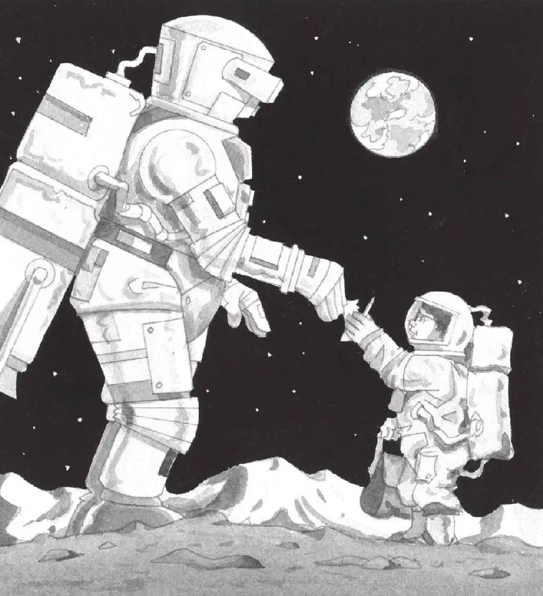

杰克的心差点儿停止跳动。
他听见安妮在说话。
“你好，”安妮说道，“我们是为和平而来的。”
没有回音。接着杰克又听见安妮说：“谢谢你，现在我要扶我哥哥站起来。”
片刻之后，安妮给杰克翻了个身，让他仰面朝上。
她抓住杰克的手，把他拉了起来。
“多谢。”杰克站起来之后说。
月球人站在几步开外。他的脸藏在一个金属面罩后面。
他看上去像宇航员，特大号的宇航员。他背着一个特大号的储气罐，简直有一台冰箱那么大。
“那是喷气式背包！”杰克说，“我在书上见过，未来的宇航员就背着这个东西在飞，像微型宇宙飞船一样。对吗？”
月球人没有回答。
“他应该听不见我们说话，”安妮说，“他没有接通我们的无线对讲机。”
“噢，对。”杰克说，“我来给他写一张字条！”
“好主意。”安妮赞同道。
杰克掏出笔记本和铅笔，在上面写道：
杰克把笔记本和铅笔递给月球人。在月球人大大的手里，笔记本和铅笔显得那么小。
月球人低头看着那段话，又看了看手里的铅笔。然后，他把笔记本翻过一页。
杰克和安妮注视着月球人把铅笔落在纸上。他非常仔细地写着什么。
写完后，他把笔记本和铅笔还给了杰克。
杰克和安妮吃惊地看着那些符号。

“星星，”安妮说，“他画了星星。”
“也许是一张太空地图。”杰克猜测道。
“太空地图？”安妮说，“对了，杰克，地图（Map）的第一个字母是M！”
“哦，太好了，”杰克说，“这肯定就是第四样东西！”
“我们问问他这张地图是什么意思吧。”安妮说着转过身去。
“呃……太晚了。”她说。
“为什么？”正在看地图的杰克抬头问道。
“你自己看。”安妮说。
只见那个月球人正朝远处的山脉飞去。
“多谢啦！”安妮大声喊道。